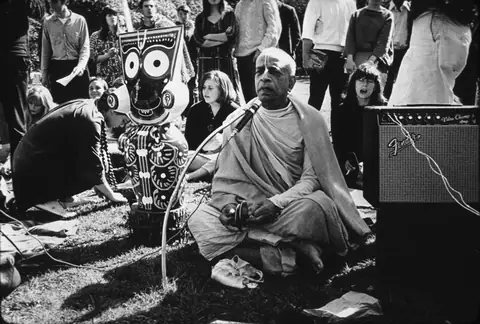

Vanipedia
The essence of Vedic knowledge
The essence of Vedic knowledge

Hamburg, 5 September 1969. Lecture.
Nectar Drops are short, focused audio excerpts of less than 90 seconds, drawn directly from Śrīla Prabhupāda's recorded lectures, conversations, and morning walks.
Articles
Books, lectures, conversations, letters
His words by topic
Audio, video, images
Welcome to Vanipedia, a dynamic, living encyclopedia of Śrīla Prabhupāda's words (vani). We are building an unparalleled digital repository of his text, audio, video, and images, comprehensively compiling his teachings from every angle of vision.
Śrīla Prabhupāda: Founder-Ācārya and Preeminent Śikṣā-Guru of the International Society for Krishna Consciousness.